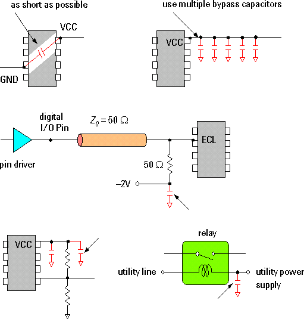

GP-DPS filter capacitors
Power supplies have a high impedance for high frequency load changes. Sudden current changes of the DUT will cause voltage spikes (or drops) at the DUT supply pins. In addition, changes in the supply voltage will influence the generated or received signal and thus increase the noise level.
Use lowpass filters, or at least bypass capacitors, for reducing noise.
- Insert a lowpass filter directly into the supply lines.
- Use electrolytic and ceramic capacitors for bypass capacitors.
Ceramic capacitors (10 to 100 nF) cover the high frequency range of noise. Place them as close to the DUT pins as possible.
The DC/DC converters that provide power to the General Purpose DPSs cause the General Purpose DPSs to generate noise in the high frequency range (at 1 MHz and 200 kHz). For filtering out noise related to the General Purpose DPSs, install a ceramic capacitor at the DUT. Advantest recommends the use of capacitances of 1 µF; larger values will reduce your measurement accuracy.
Electrolytic capacitors (10 to 100 µF) cover the low frequency range. They can be positioned anywhere on the DUT board.
At a minimum, the following supplies should be filtered:
- Power supply for test circuit components
- Power supply for pull-up
- Power supply for relays
- DUT reference voltage
- Termination bias voltages
For radio frequency decoupling, connect a small high frequency decoupling capacitor as close as possible to each power pin of your DUT. The optimum value for this capacitor depends on your specific application. However, you can normally use a ceramic capacitor of 1 to 22 nF. Surface mount capacitors provide the best results because of their reduced lead inductance.
The figure below shows examples of blocking and bypass capacitor connections.

Functional changes
- Introduced before SmarTest 6.3.2